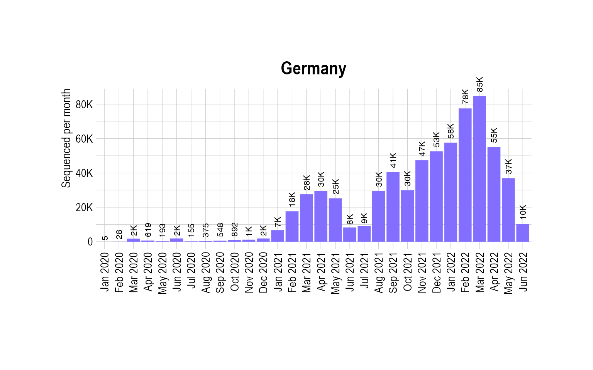
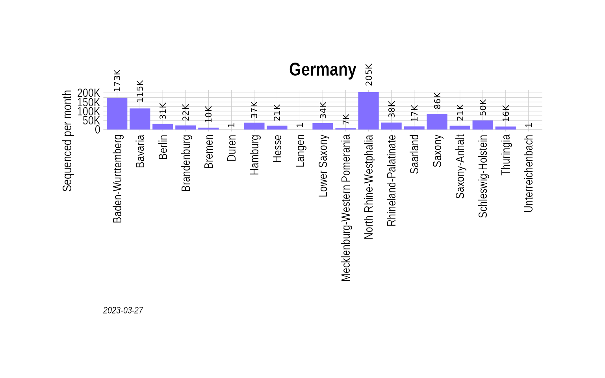

Multinomial modeling - Germany
Source:vignettes/MultinomialModeling-Germany.Rmd
MultinomialModeling-Germany.Rmd
suppressPackageStartupMessages({
library(covmuller)
library(tidyverse)
})
theme_set(CovmullerTheme())
gisaid_metadata <- qs::qread(file = "~/github/2021_Covid19_surveillance/data/all_metadata/metadata_tsv_2022_06_09.qs")
gisaid_germany <- gisaid_metadata %>%
filter(Country == "Germany") %>%
filter(Host == "Human")
gisaid_germany <- FormatGISAIDMetadata(gisaid_germany) %>% filter(State!="") %>% filter(pangolin_lineage!="Unassigned")Plot total sequenced cases
country_seq_stats <- TotalSequencesPerMonthCountrywise(gisaid_germany, rename_country_as_state = TRUE)
p0 <- BarPlot(country_seq_stats, ylabel = "Sequenced per month", color = "slateblue1", label_si = TRUE, xangle = 90, title = "Germany")
p0
Plot stateswise sequenced cases
state_seq_stats <- TotalSequencesPerMonthStatewise(gisaid_germany)
state_seq_stats_summary <- state_seq_stats %>%
group_by(State) %>%
summarise(value = sum(value))
p1 <- BarPlot(state_seq_stats_summary, xaxis = "State", ylabel = "Sequenced per month", color = "slateblue1", label_si = TRUE, xangle = 90, title = "Germany")
p1
Get VOCs
vocs <- GetVOCs()
omicron <- vocs[["omicron"]]
vocs[["omicron"]] <- NULL
custom_voc_mapping <- list(
`BA.1.1` = "BA.1.1",
`BA.1` = "BA.1",
`BA.2` = "BA.2",
`BA.2.1` = "BA.2.1",
`BA.2.10` = "BA.2.10",
`BA.2.10.1` = "BA.2.10.1",
`BA.2.12` = "BA.2.12",
`BA.2.12.1` = "BA.2.12.1",
`BA.3` = "BA.3",
`BA.4` = "BA.4",
`BA.5` = "BA.5"
)
gisaid_germany_collapsed <- CollapseLineageToVOCs(
variant_df = gisaid_germany,
vocs = vocs,
custom_voc_mapping = custom_voc_mapping,
summarize = FALSE
)
gisaid_germany_collapsed_sel <- gisaid_germany_collapsed %>%
filter(MonthYearCollected >= "Nov 2021") %>%
filter(lineage_collapsed != "Unassigned") %>%
filter(State != "Unknown")
vocs_to_keep <- table(gisaid_germany_collapsed_sel$lineage_collapsed)
vocs_to_keep <- vocs_to_keep[vocs_to_keep > 50]
gisaid_germany_collapsed_sel <- gisaid_germany_collapsed_sel %>% filter(lineage_collapsed %in% names(vocs_to_keep))
gisaid_germany_shared_dateweek <- SummarizeVariantsDatewise(gisaid_germany_collapsed_sel, by_state = TRUE)
head(gisaid_germany_shared_dateweek)## # A tibble: 6 × 4
## State DateCollectedNumeric lineage_collapsed n
## <chr> <dbl> <chr> <int>
## 1 Baden-Wurttemberg 18932 Delta 69
## 2 Baden-Wurttemberg 18933 Delta 220
## 3 Baden-Wurttemberg 18933 Others 1
## 4 Baden-Wurttemberg 18934 Delta 485
## 5 Baden-Wurttemberg 18934 Others 1
## 6 Baden-Wurttemberg 18935 Delta 623
fit_germany_multi_predsbystate <- FitMultinomStatewiseDaily(gisaid_germany_shared_dateweek)## # weights: 228 (198 variable)
## initial value 978486.661300
## iter 10 value 342267.285310
## iter 20 value 300103.124477
## iter 30 value 293065.565130
## iter 40 value 261608.490430
## iter 50 value 238485.163287
## iter 60 value 226113.383608
## iter 70 value 215880.110744
## iter 80 value 202621.649283
## iter 90 value 198559.670473
## iter 100 value 194467.636686
## iter 110 value 191937.944450
## iter 120 value 190776.620180
## iter 130 value 190207.631626
## iter 140 value 189939.743548
## iter 150 value 189712.818932
## iter 160 value 189541.246664
## iter 170 value 189423.803999
## iter 180 value 189364.816806
## iter 190 value 189316.980231
## iter 200 value 189289.628834
## iter 210 value 189271.825062
## iter 220 value 189256.191830
## iter 230 value 189234.992802
## iter 240 value 189220.765146
## iter 250 value 189216.772198
## iter 260 value 189215.955608
## iter 270 value 189214.846078
## iter 280 value 189214.028107
## iter 290 value 189212.473019
## iter 300 value 189209.270196
## iter 310 value 189203.652760
## iter 320 value 189200.786936
## iter 330 value 189198.998411
## iter 340 value 189198.474458
## iter 350 value 189198.025907
## iter 360 value 189197.795304
## iter 370 value 189197.735490
## iter 380 value 189197.696378
## iter 390 value 189197.215558
## iter 400 value 189196.321327
## iter 410 value 189196.200991
## iter 420 value 189195.993197
## iter 430 value 189195.932017
## iter 430 value 189195.931036
## iter 430 value 189195.931036
## final value 189195.931036
## converged
head(fit_germany_multi_predsbystate)## lineage_collapsed DateCollectedNumeric State prob
## 1 BA.1 18932 Baden-Wurttemberg 4.473148e-05
## 2 BA.2 18932 Baden-Wurttemberg 4.302267e-09
## 3 BA.2.1 18932 Baden-Wurttemberg 3.880265e-09
## 4 BA.2.10 18932 Baden-Wurttemberg 1.729191e-09
## 5 BA.2.10.1 18932 Baden-Wurttemberg 3.919707e-09
## 6 BA.2.12 18932 Baden-Wurttemberg 3.042729e-11
## SE df asymp.LCL asymp.UCL DateCollected
## 1 3.478353e-06 NA 3.791404e-05 5.154893e-05 2021-11-01
## 2 5.334005e-10 NA 3.256821e-09 5.347713e-09 2021-11-01
## 3 2.007720e-09 NA -5.479476e-11 7.815324e-09 2021-11-01
## 4 6.450658e-10 NA 4.648853e-10 2.993497e-09 2021-11-01
## 5 2.338683e-09 NA -6.640276e-10 8.503442e-09 2021-11-01
## 6 2.383689e-11 NA -1.629215e-11 7.714674e-11 2021-11-01